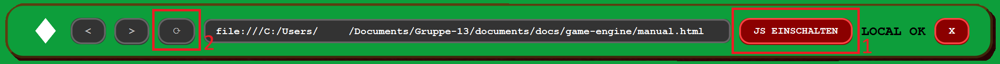

JavaScript is disabled
The Casono Browser requires JavaScript for the
Casono Markdown Render Engine to display content correctly.
For security, JavaScript is disabled by default in the Casono Browser and should only be enabled when needed.
Please enable JavaScript in your Browser settings and reload the page.
